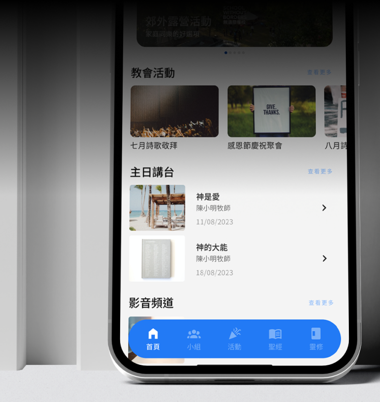
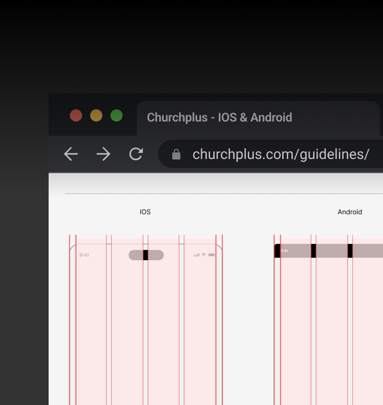
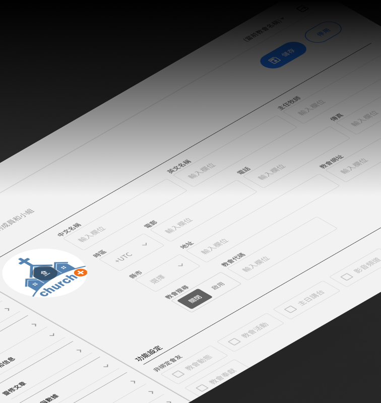
01Problem/Challenge Solution |
|
|---|---|
01 |
Cluttered Information Architecture
Conducted a comprehensive feature audit to purge redundant functions and consolidate related tools.
|
02 |
Outdated & Platform-Agnostic UI
Modernized the visual identity and implemented OS-specific refinements (iOS/Android) for headers and menus.
|
03 |
Multi-Tenant Permission Complexity
Designed a modular UI synced with a flexible backend, allowing 100+ branches to toggle features independently.
|
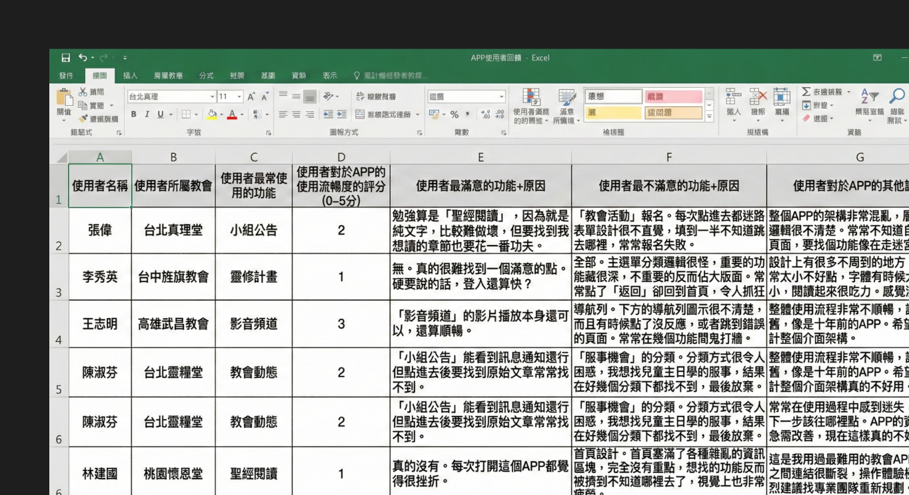
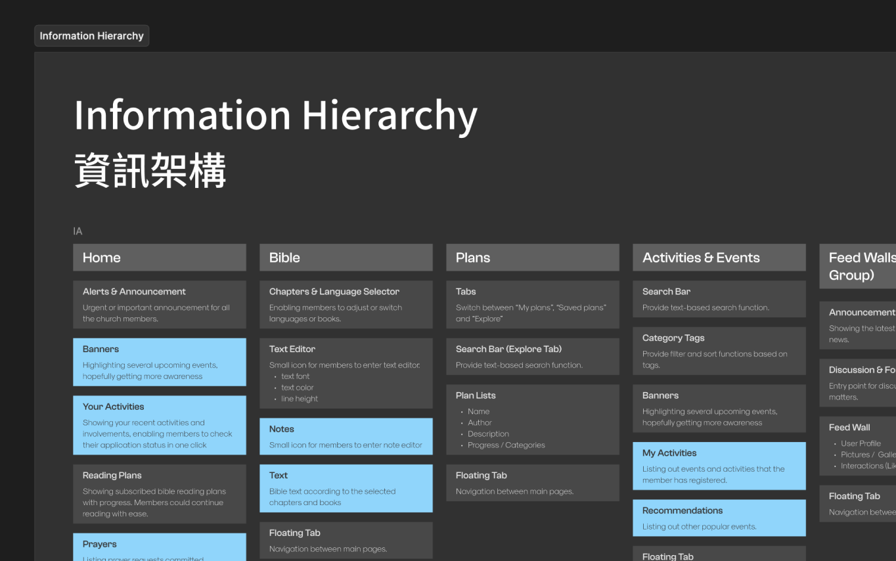
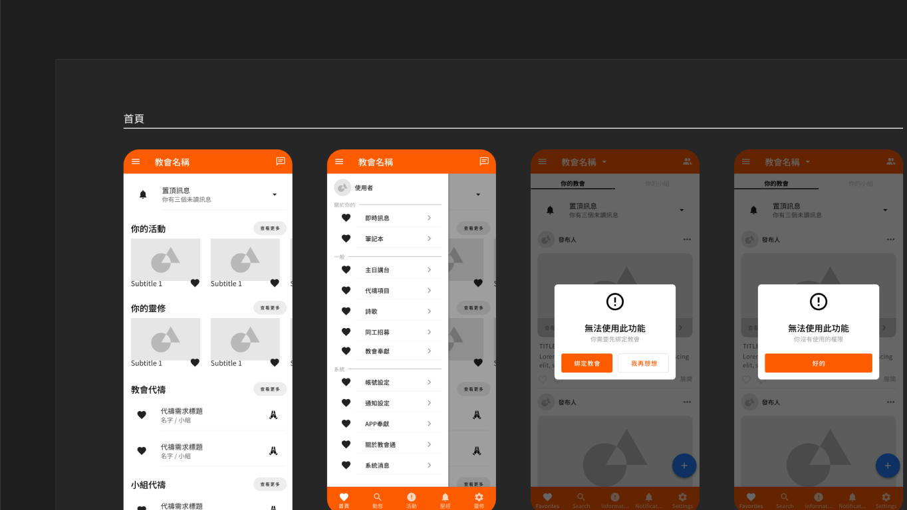
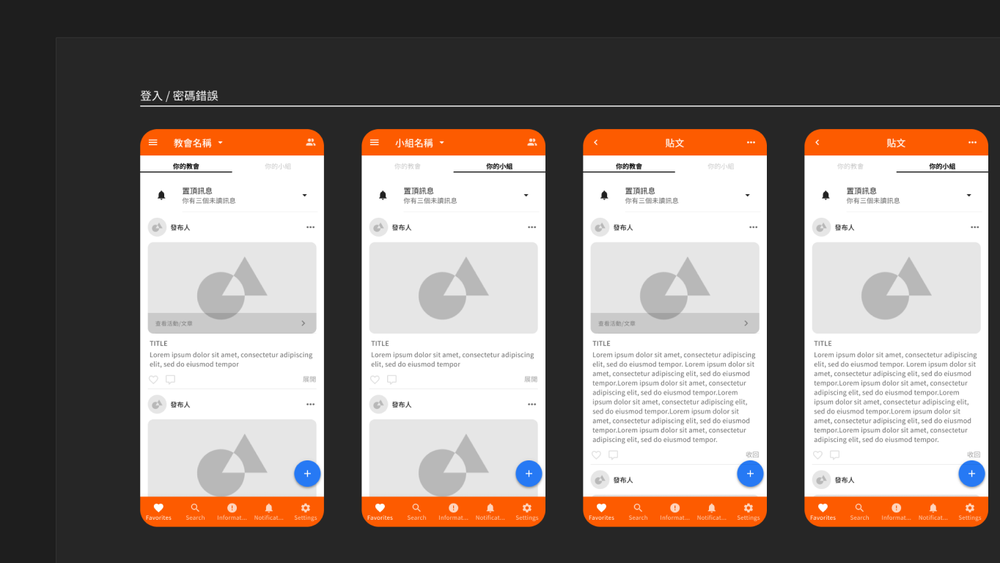


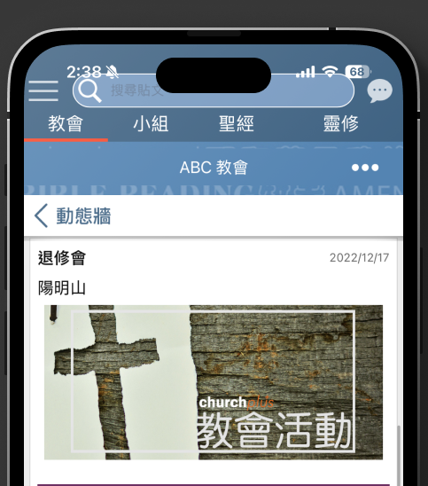
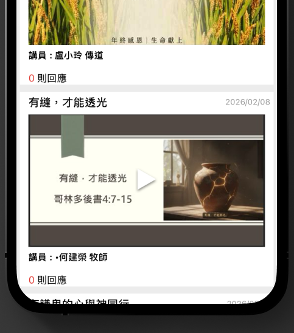
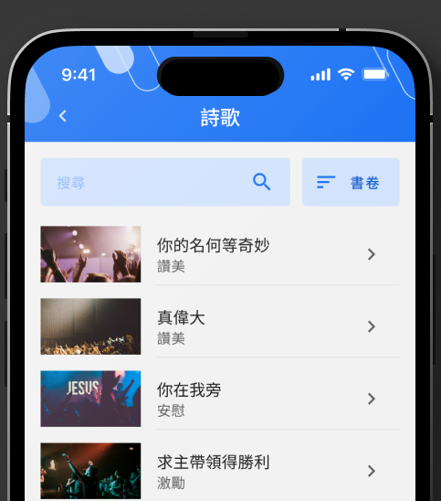
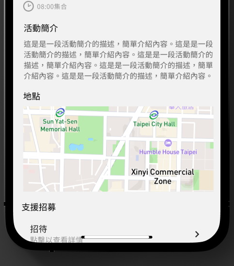
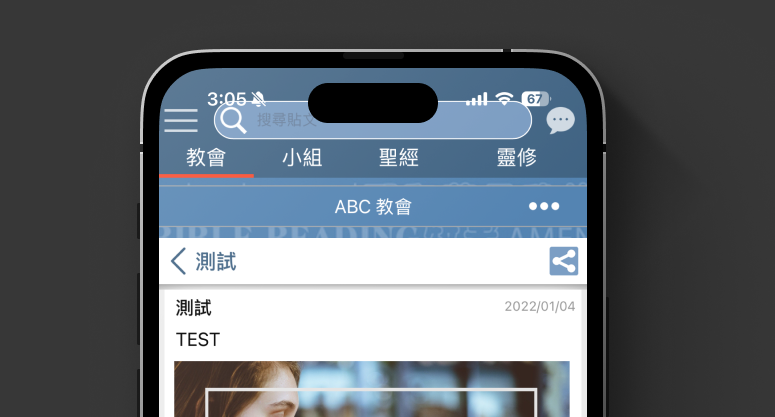
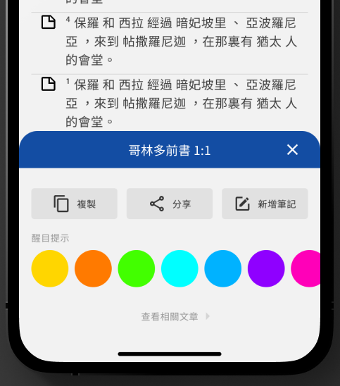
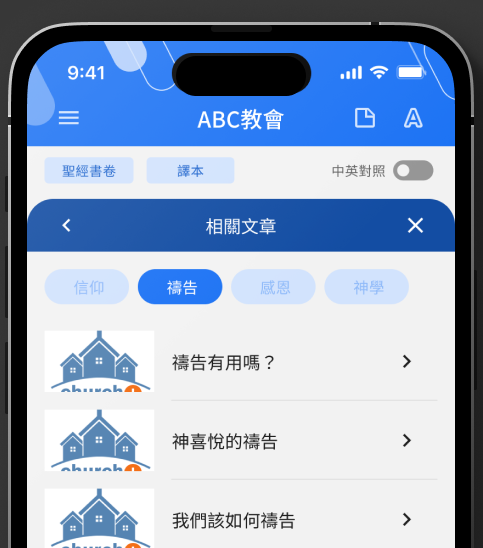
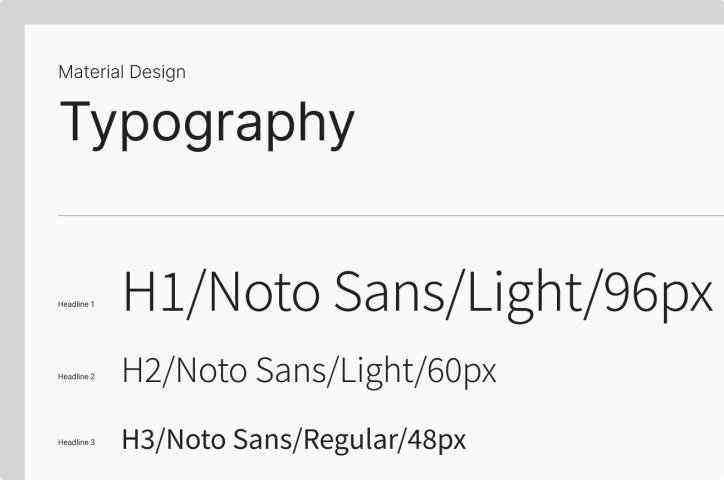
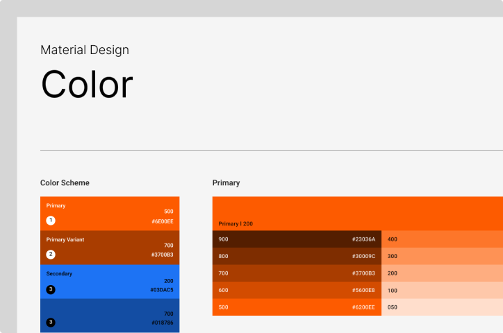
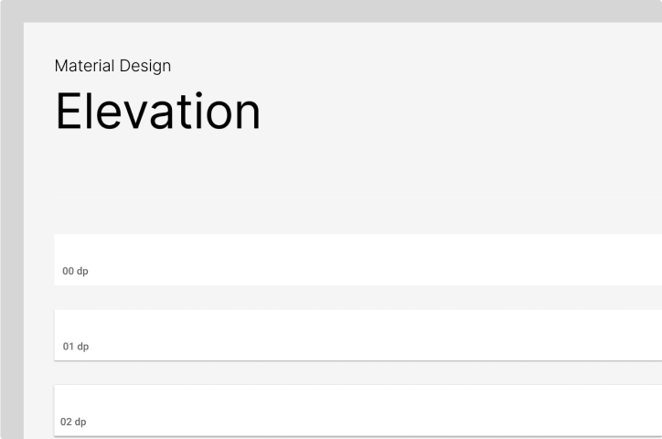
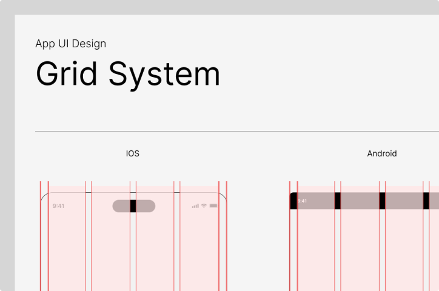
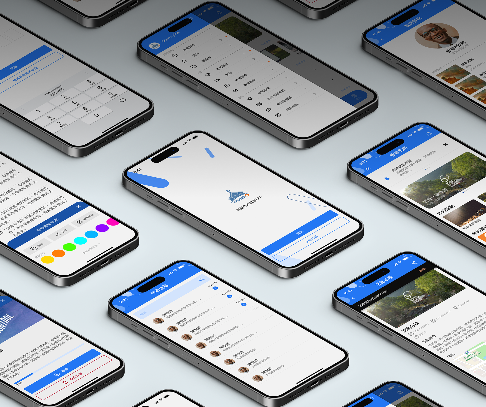
1
/Problems
Metrics
UX Planning
Design Styles
Iterations
Design System
Outcomes